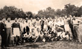
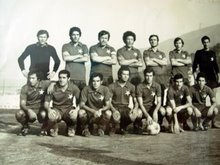
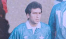

Origini del calcio a pagani
Nel 1912 Pasquale Carosella istituisce all'interno della sua società, l' Associazione Giovanile Paganese , con sezione calcistica e ciclistica, la Pagani Football Club, che non parteciperà mai ad alcun campionato ma disputerà incontri di carattere amichevole. I primi campionati
Nel 1926 nasce l'Unione Sportiva Paganese con presidente Giuseppe Baldanza. Una volta costituiti i quadri societari (1927), e con l'avvenuta affiliazione alla FIGC (1928), alla neonata squadra serve un campo da gioco. Prima della nascita della società, infatti, i calciatori di Pagani giocavano in una vasca di raccolta di acque piovane, e solo nel marzo 1928 fu concesso il terreno per il campo da gioco. Il primo campo sportivo nacque al centro della città, in corso Padovano, ove oggi si trova la Villa Comunale: fu il "Campo del Pino", così chiamato perchè sorgeva al centro del paese, dove si ergeva un gigantesco pino (simbolo della città) piantato trecento anni prima nel giardino dell'allora convento delle Suore Carmelitane. Il primo allenatore fu Venturini, già difensore della Salernitana, che a Pagani ebbe il doppio ruolo di guida tecnica e giocatore. La squadra si piazzò al 4o posto nel campionato di Terza Divisione 1928-1929, e fu promossa in Seconda Divisione. La stagione 1929-30 deve essere annoverata tra le più importanti nella storia del calcio paganese. La formazione allenata dal tecnico Gherloni con presidente Costantino Astarita fu la grande sorpresa del campionato di Seconda Divisione 1929-1930 Girone A. Al termine di 18 combattutissime partite la Paganese si aggiudicò il girone superando squadre del calibro di Reggina, Catania e Cosenza.Grazie al primo posto nel girone la Paganese, insieme alla Reggina, approdarono alle finali interregionali che avrebbero decretato la squadra promossa in Prima Divisione. La Paganese vi arrivò esausta, non disponendo di una rosa di calciatori molto ampia a disposizione e così dovette arrendersi in casa sia alla Reggina, che pure aveva battuto nella regular season per 2-0, sia al Molfetta. Il risultato portò lo scoramento tra i dirigenti azzurri che con un duro comunicato stigmatizzarono il comportamento degli atleti azzurri rei a loro dire di scarso attaccamento ai colori sociali. Per ragioni economiche la Paganese quindi retrocede in Terza Divisione Campania. Nella stagione 1932-1933 la Paganese sfiorò per un soffio la promozione in seconda divisione ma al termine di un'annata caratterizzata da alti e bassi, venne ripescata nella categoria superiore. Nella stagione 1933-34 la Paganese si classifica al 4o posto in Seconda Divisione regionale. Gli anni d'oro
Nel 1967 la Paganese conquistò la Serie D, categoria nella quale disputò nove stagioni fino alla promozione in Serie C, avvenuta nel 1976. Il salto di categoria venne accompagnato dalla costruzione del nuovo stadio comunale (intitolato poi a Marcello Torre) e all'abbandono, quindi, dello stadio Del Forno, che aveva a sua volta sostituito il "Campo del Pino". La Paganese, nel campionato di serie C 1976-1977, sfiorò la promozione in serie B, giungendo seconda alle spalle del Bari. Gli azzurrostellati subiscono solo 4 sconfitte di cui 2 nella fase conclusiva del torneo allorquando la rimonta sul Bari non sembrava più cosa possibile, vincono 14 incontri e ne pareggiano 20. Probabilmente con un attaccante maggiormente prolifico qualche pareggio si sarebbe trasformato in vittoria ma il campionato che la Paganese disputò rimane la massima espressione calcistica che mai Pagani abbia saputo offrire. Fu una stagione memorabile comunque: 2o posto finale dietro il Bari e semifinale della Coppa Italia serie C contro la Sangiovannese, che superò i campani accedendo alla finale vinta poi dal Lecco. I tanti soldi spesi suggerirono ai dirigenti di allora di non spingersi oltre con il disavanzo societario. Pertanto si decide di allestire per il campionato di serie C 1977-1978 una squadra giovane. Alla fine la Paganese si classifica decima al termine del campionato, riuscendo a conquistare l'accesso alla serie C1, che sarebbe stata introdotta l'anno successivo in seguito alla divisione del torneo di serie C in C1 e C2. Gli anni 90
Nell'estate del 1990 è l'imprenditore edile Raffaele Iacuzio, già dirigente della Paganese durante la presidenza De Risi ai tempi della serie C, a farsi avanti affinchè il calcio a Pagani non scompaia. La squadra retrocessa in Prima Categoria fu abbandonata e si potè iscrivere in Promozione solo con l'acquisizione del titolo dell'A.C. Stabia. Il campionato di Eccellenza 1991-1992 per gli azzurri si rivela un campionato entusiasmante. Mattatore della stagione è l'attaccante Peppe Orlando capace di ben 19 marcature. La prima gara di campionato si disputa in trasferta a Cava de' Tirreni contro la favorita del girone dove gli azzurrostellati si impongono per 2-1. Fu l'inizio di un cammino trionfale interrotto solo alla settima giornata in seguito alla sconfitta nel derby con la Nocerina e alla nona (Gelbison, 0-1). Con venti vittorie, sette pareggi e solo tre sconfitte, la Paganese si aggiudica il torneo con quattro gare di anticipo e ritorna nel campionato Interregionale denominato Campionato Nazionale Dilettanti.Nel Campionato Nazionale Dilettanti 1992-1993 si classifica 14a, salvandosi. Ma nel Campionato Nazionale Dilettanti 1993-1994, pur disputando un buon torneo, classificandosi al 10o posto, retrocede in Eccellenza Campania per motivi economici. L'annata 1996-1997 vide la sfida stracittadina tra Paganese e Real Paganese con quest'ultima che arrivò a sfiorare la conquista della Coppa Italia dilettantistica riservata alle squadre della regione Campania. Nella Finale disputata a Portici, viene sconfitta dalla Boys Caivanese. Nel campionato di Eccellenza 1996-1997 la Real contende all'Angri la vittoria di campionato. Gli azzurri si classificano al secondo posto e partecipano ai play-off dell'Eccellenza sfidando ancora la Boys Caivanese. Nella gara di andata giocata al "Torre" non va oltre lo 0-0. In quella di ritorno viene sconfitta per 2-1 e deve rinunciare ai sogni di promozione nel campionato di serie D.Al campionato di Eccellenza 1997-1998 prende parte solo la Real Paganese (la Paganese del presidente Francione cede il titolo al San Marzano). Si punta chiaramente alla vittoria del campionato. La Real Paganese, dopo un lungo inseguimento, giunge seconda a pari merito con la Palmese. Pertanto è necessario uno spareggio per decretare quale delle due squadre debba accedere agli spareggi per la promozione nel campionato di categoria superiore. Lo spareggio si disputa sul campo neutro di Benevento, e vide la sconfitta della Paganese dopo i rigori.Il ritorno in serie C
La Paganese ritornò in Serie D chiudendo al primo posto il campionato di Eccellenza 1998-1999. Seguirono sei stagioni in serie D. Nella stagione 2005-2006 la squadra ha vinto il Girone H della Serie D, aggiudicandosi dunque il passaggio in Serie C2, con cinque giornate di anticipo. La Paganese successivamente partecipa alla fase finale che vede impegnate le nove vincenti dei gironi della serie D. Gli azzurro stellati battono nel loro girone il Sorrento a Pagani per 2-1 e pareggiano a Cassino 0-0. In semifinale la Paganese affronta il Varese che viene battuto a Pagani per 2-1 e in Lombardia per 3-1. La finale vede di fronte Paganese e Fortis Spoleto. Grazie ad una doppietta di Romano, gli azzurri si aggiudicano lo Scudetto Dilettanti e potranno fregiarsi di portare il tricolore sul petto nella successiva stagione in C2. Nella stagione seguente (2006-2007), dopo il campionato nel Girone B della Serie C2, la Paganese è riuscita a qualificarsi ai play-off per la promozione in Serie C1. Dopo il doppio confronto con la SPAL (1-0 a Pagani e 1-1 a Ferrara) e con la Reggiana (1-0 per gli emiliani all'andata, 2-0 dopo i tempi supplementari per i campani al ritorno) la Paganese è riuscita a ritornare in Serie C1 a distanza di 24 anni, realizzando una doppia promozione in due anni. Al ritorno in C1 il tecnico, Vincenzo Cosco, si dimette dopo tre partite (due sconfitte e uno pareggio). Viene così ingaggiato Andrea Chiappini. Dopo un buon girone d'andata, quello di ritorno è negativo e la squadra si ritrova all'ultimo posto. Dopo la sconfitta per 5-0 col Legnano e il pareggio con l'Hellas Verona, in casa, il presidente Trapani esonera Chiappini e chiama Roberto Miggiano. Nell'ultima giornata la squadra batte il Cittadella e riesce a qualificarsi ai playout, evitando la retrocessione diretta. Nei playout la Paganese incrocia il Lecco. La gara di andata in casa dei lariani termina 1-0 per i padroni di casa, mentre quella di ritorno viene vinta dalla squadra salernitana per 2-0. Per la stagione 2008-2009 la dirigenza ingaggia come tecnico Ezio Capuano, e giocatori come Imparato (dalla Salernitana), Esposito (dal Foggia), Mirko Taccola (dal San Marino ma con esperienze in A con Inter e Napoli), Nassim Mendil, Giuseppe Ingrosso (proveniente dal Bari) e infine Armando Pantanelli, portiere veterano con numerose presenze in Serie A. La squadra riesce a centrare l'obiettivo stagionale, evitando i play out e salvandosi direttamente. Per la stagione 2009-2010 viene richiamato Palumbo come guida tecnica della squadra; Palumbo viene poi sostituito dopo due giornate da Andrea Pensabene, a sua volta esonerato dopo nove giornate. Successivamente nessuna novità per quanto riguarda la panchina della Paganese in quanto rientra nei ranghi tecnici della squadra il tecnico lucano Palumbo. Al termine della stagione la squadra retrocede dopo aver perso gli spareggi salvezza con il Viareggio. Per la stagione 2010-2011 grazie al ripescaggio del 4 agosto 2010, ha disputato per il quarto anno consecutivo il campionato di Lega Pro Prima Divisione. La Paganese termina però il campionato all'ultimo posto dopo l'1-0 con il SudTirol e viene direttamente retrocessa in Lega Pro Seconda Divisione. Nella stagione 2011-2012 la Paganese si classifica al sesto posto nel girone C di Seconda Divisione, guadagnando l'accesso ai play-off; nel corso degli spareggi, la formazione allenata da Gianluca Grassadonia sconfigge in semifinale la Vigor Lamezia e in finale il Chieti, ritornando in Lega Pro Prima Divisione. Nella stagione 2012-2013 la Paganese batte, dopo 50 anni, la Nocerina in trasferta per 4-1 nella partita disputata sul campo neutro del Chieti a porte chiuse per motivi di ordine pubblico. La squadra, guidata da Gianluca Grassadonia va a segno con Girardi, Calvarese e doppietta di Francesco Scarpa.